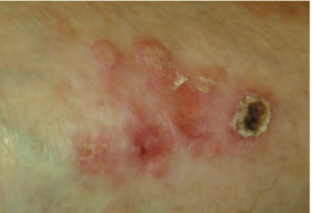

Questão 1 · Bradiarritmias e bloqueios atrioventriculares · Distúrbios da condução atrioventricular · 4000187125O bloqueio Atrioventricular (BAV), na presença de dilatação leve do VE, pode ser devido a várias causas (incluindo laminopatia), mas também pode ser sugestivo de doença de Lyme, sarcoidose cardíaca ou miocardite de células gigantes. Sendo correto que o:
A ECG fornece uma ferramenta conveniente para a estratificação de risco e não para triagem inicial, mas com valor diagnóstico fraco.
B ECG fornece uma ferramenta conveniente para a estratificação de risco e a triagem inicial, mas com valor diagnóstico padrão ouro.
C ECG fornece uma ferramenta conveniente para a estratificação de risco e a triagem inicial, mas com valor diagnóstico fraco.
D ECG não fornece uma ferramenta conveniente para a estratificação de risco e a triagem inicial, mas com valor diagnóstico fraco.
Questão 2 · Ddímero · DDímero · 4000187124Evidências recentes sugerem que níveis muito altos do D-dímero:
A Não estão associados a um aumento de quatro vezes na probabilidade de TEP - Trombembolismo Pulmonar.
B Estão associados a uma redução de quatro vezes na probabilidade de TEP - Trombembolismo Pulmonar.
C Estão associados a um aumento de trinta vezes na probabilidade de TEP - Trombembolismo Pulmonar.
D Estão associados a um aumento de quatro vezes na probabilidade de TEP - Trombembolismo Pulmonar.
Questão 3 · Prova tuberculínica PPD Mantoux · 4000187123Para profissionais de saúde, considera-se o resultado da PT positivo:
A Quando a enduração for maior ou igual a 10mm, exceto quando houver outras comorbidades que impliquem um maior risco de TB, como HIV, diabetes e uso de imunobiológicos, dentre outras. Nessas situações, o corte da PT é maior ou igual a 5mm.
B Quando a enduração for menor ou igual a 10mm, exceto quando houver outras comorbidades que impliquem um maior risco de TB, como HIV, diabetes e uso de imunobiológicos, dentre outras. Nessas situações, o corte da PT é maior ou igual a 5mm.
C Quando a enduração for maior ou igual a 10mm, mesmo quando houver outras comorbidades que impliquem um maior risco de TB, como HIV, diabetes e uso de imunobiológicos, dentre outras. Nessas situações, o corte da PT é maior ou igual a 5mm.
D Quando a enduração for maior ou igual a 10mm, exceto quando houver outras comorbidades que impliquem um maior risco de TB, como HIV, diabetes e uso de imunobiológicos, dentre outras. Nessas situações, o corte da PT é maior ou igual a 15mm.
Questão 4 · Miocardite · 4000187122As alterações siopatológicas dos diversos tipos de miocardite vão formar a base para o uso das técnicas de medicina nuclear. Sobre isso, assinale a alternativa correta:
A O processo inflamatório que leva à lesão do miocárdio é caracterizado por infiltração de linfócitos e não de macrófagos no miocárdio, pelo aumento da permeabilidade vascular e pelo consumo aumentado de glicose no sítio de inflamação e pela necrose celular com redução da perfusão tecidual em comparação com o miocárdio íntegro.
B O processo inflamatório que leva à lesão do miocárdio é caracterizado por infiltração de linfócitos e macrófagos no miocárdio, pelo aumento da permeabilidade vascular e pelo consumo aumentado de glicose no sítio de inflamação e pela necrose celular com redução da perfusão tecidual em comparação com o miocárdio íntegro.
C O processo inflamatório que leva à lesão do miocárdio é caracterizado por infiltração de linfócitos e macrófagos no miocárdio, pelo aumento da permeabilidade vascular e pelo consumo aumentado de glicose no sítio de inflamação e pela necrose celular com aumento da perfusão tecidual em comparação com o miocárdio íntegro.
D O processo inflamatório que leva à lesão do miocárdio é caracterizado por infiltração de linfócitos e macrófagos no miocárdio, pelo aumento da permeabilidade vascular e pelo consumo reduzido de glicose no sítio de inflamação e pela necrose celular com redução da perfusão tecidual em comparação com o miocárdio íntegro.
Questão 5 · Novos alvos terapêuticos · 4000187121Os inibidores de proteassoma são drogas relativamente novas no tratamento do mieloma múltiplo. Bortezomibe e carfilzomibe são os fármacos dessa classe, e:
A podem causar disfunção cardiovascular. Os proteassomas são complexos proteicos responsáveis por degradar proteínas disfuncionais e, além disso, não são essenciais para a sobrevivência do cardiomiócito.
B podem causar disfunção cardiovascular. Os proteassomas são complexos proteicos responsáveis por degradar proteínas disfuncionais e, além disso, essenciais para a sobrevivência do cardiomiócito.
C não podem causar disfunção cardiovascular. Os proteassomas são complexos proteicos responsáveis por degradar proteínas disfuncionais e, além disso, essenciais para a sobrevivência do cardiomiócito.
D podem causar disfunção cardiovascular. Os proteassomas são complexos proteicos responsáveis por proteger proteínas disfuncionais e, além disso, essenciais para a sobrevivência do cardiomiócito.
Questão 6 · Tratamento · Manif estações clínicas · 4000187120Na Leishmaniose Tegumentar os critérios de cicatrização das lesões são clínicos. Sendo correto que:
A Na leishmaniose cutânea, a lesão deve apresentar epitelização incompleta e regressão parcial da infiltração e do eritema, até seis meses após o término do tratamento.
B Na leishmaniose cutânea, a lesão deve apresentar epitelização completa e regressão total da infiltração e não do eritema, até seis meses após o término do tratamento.
C Na leishmaniose cutânea, a lesão deve apresentar epitelização completa e regressão total da infiltração e do eritema, até seis meses após o término do tratamento.
D Na leishmaniose cutânea, a lesão deve apresentar epitelização completa e regressão total da infiltração e do eritema, até seis anos após o término do tratamento.
Questão 7 · Tuberculose extrapulmonar · 4000187119Na tuberculose extrapulmonar a coleta de amostra clínica depende do local suspeito da doença e requer procedimentos invasivos. Sendo correto que:
A O diagnóstico clínico não é suficiente e requer exames complementares para investigar e elucidar o diagnóstico.
B O diagnóstico clínico é suficiente e requer exames complementares para investigar e elucidar o diagnóstico.
C O diagnóstico clínico não é suficiente e não requer exames complementares para investigar e elucidar o diagnóstico.
D O diagnóstico clínico é suficiente e não requer exames complementares para investigar e elucidar o diagnóstico.
Questão 8 · Novos alvos terapêuticos · Tumor Estromal Gastrointestinal GIST · 4000187117Fármacos como os inibidores de tirosina quinase BCRABL:
A Modificaram o prognóstico de pacientes com leucemia mieloide crônica e não tumores estromais gastrointestinais.
B Modificaram o prognóstico de pacientes com leucemia mieloide crônica e tumores estromais gastrointestinais.
C Modificaram o prognóstico de pacientes com leucemia mieloide crônica e tumores estromais não gastrointestinais.
D Não modificaram o prognóstico de pacientes com leucemia mieloide crônica e tumores estromais gastrointestinais.
Questão 9 · Miocardite · Ecocardiograma · Ecocardiograma · 4000187116O ecocardiograma tem um papel limitado no diagnóstico da miocardite propriamente dita. Sendo correto que:
A Trata-se de uma ferramenta muito importante na exclusão de outras patologias, devendo sempre ser realizada quando não ocorre a suspeita clínica.
B Trata-se de uma ferramenta sem importância na exclusão de outras patologias, devendo sempre ser realizada quando ocorre a suspeita clínica.
C Trata-se de uma ferramenta muito importante na exclusão de outras patologias, devendo sempre ser realizada quando ocorre a suspeita epidemiológica.
D Trata-se de uma ferramenta muito importante na exclusão de outras patologias, devendo sempre ser realizada quando ocorre a suspeita clínica.
Questão 10 · Tratamento · 4000187114Na Leishmaniose Visceral o acompanhamento pós-tratamento é baseado na avaliação clínica:
A Apesar de haver uniformidade de critérios de cura entre os vários estudos científicos nem definição de parâmetros objetivos.
B Apesar de não haver uniformidade de critérios de cura entre os vários estudos científicos, somente definição de parâmetros objetivos.
C Apesar de haver uniformidade de critérios de cura entre os vários estudos científicos bem como definição de parâmetros objetivos.
D Apesar de não haver uniformidade de critérios de cura entre os vários estudos científicos nem definição de parâmetros objetivos.
Questão 11 · Marcadores inf lamatórios · Biomarcadores inf lamatórios · 4000187113O citrato de Gálio-67 é um traçador consagrado para pesquisa de infecção em medicina nuclear, que:
A se liga a células inflamatórias em sítios de aumento de permeabilidade vascular graças à sua característica ligação com as proteínas transportadoras do ferro como a lactoferina e nos lisossomos leucocitários.
B não se liga a células inflamatórias em sítios de aumento de permeabilidade vascular graças à sua característica ligação com as proteínas transportadoras do ferro como a lactoferina e nos lisossomos leucocitários.
C se liga a células inflamatórias em sítios de aumento de permeabilidade vascular graças à sua característica ligação com as proteínas transportadoras do ferro como a lactoferina e não nos lisossomos leucocitários.
D se liga a células inflamatórias em sítios de redução de permeabilidade vascular graças à sua característica ligação com as proteínas transportadoras do ferro como a lactoferina e nos lisossomos leucocitários.
Questão 12 · Micobacteriose nãotuberculose · 4000187111As Micobactérias não Tuberculosas (MNT) encontram-se distribuídas no meio ambiente e apresentam patogenicidade variável:
A Ao contrário das espécies que compõem o Complexo Mycobacterium tuberculosis (CMT e Mycobacterium leprae, que são qualificadas como estritamente não patogênicas e que raramente são encontradas no meio ambiente. Ao
B Ao contrário das espécies que compõem o Complexo Mycobacterium tuberculosis (CMTB) e Mycobacterium leprae, que são qualificadas como estritamente patogênicas e que usualmente são encontradas no meio ambiente.
C Igual as espécies que compõem o Complexo Mycobacterium tuberculosis (CMTB) e Mycobacterium leprae, que são qualificadas como estritamente patogênicas e que raramente são encontradas no meio ambiente.
D Ao contrário das espécies que compõem o Complexo Mycobacterium tuberculosis (CMTB) e Mycobacterium leprae, que são qualificadas como estritamente patogênicas e que raramente são encontradas no meio ambiente.
Questão 13 · Micobacteriose nãotuberculose · 4000187109As doenças causadas por Micobactérias não Tuberculosas (MNT) são mundialmente consideradas emergentes:
A Fato que tem sido relacionado à melhoria dos métodos diagnósticos, ao envelhecimento populacional e não à presença de doenças imunossupressoras associadas, como a infecção pelo HIV.
B Fato que tem sido relacionado à melhoria dos métodos diagnósticos, ao envelhecimento populacional e à presença de doenças imunossupressoras associadas, como a infecção pelo HIV.
C Fato que tem sido relacionado à melhoria dos métodos diagnósticos, ao envelhecimento populacional e à presença de doenças imunossupressoras associadas, mas não a infecção pelo HIV.
D Fato que tem sido relacionado à piora dos métodos diagnósticos, ao envelhecimento populacional e à presença de doenças imunossupressoras associadas, como a infecção pelo HIV.
Questão 14 · Transmissão · Inf ecções por micobactérias · 4000187108A transmissão do M. tuberculosis ocorre principalmente por meio de aerossóis respiratórios, produzidos quando uma pessoa infectada tosse ou espirra, assim como acontece com outros patógenos respiratórios. Sendo correto que:
A É possível a transmissão por aerossóis em pessoas submetidas a procedimentos de vias aéreas, como o escarro induzido, a espirometria, a intubação orotraqueal, mas não aspiração de vias aéreas.
B É impossível a transmissão por aerossóis em pessoas submetidas a procedimentos de vias aéreas, como o escarro induzido, a espirometria, a intubação orotraqueal ou aspiração de vias aéreas.
C É possível a transmissão por aerossóis em pessoas submetidas a procedimentos de vias aéreas, como o escarro induzido, a espirometria, a intubação orotraqueal ou aspiração de vias aéreas.
D É possível a transmissão por aerossóis em pessoas submetidas a procedimentos de vias aéreas, como o escarro induzido, mas não na espirometria, a intubação orotraqueal ou aspiração de vias aéreas.
Questão 15 · Tratamento da leucemia mieloide crônica LMC · Uso crônico de imunobiológicos · 4000187106Não há confirmação de cardiotoxicidade envolvendo imatinibe, porém:
A Nilotinibe e ponatinibe podem estar associados à cardiotoxicidade do tipo insuficiência cardíaca, HAS, arritmias e tromboembolismo.
B Nilotinibe, mas nunca ponatinibe podem estar associados à cardiotoxicidade do tipo insuficiência cardíaca, HAS, arritmias e tromboembolismo.
C Nilotinibe e ponatinibe também não podem estar associados à cardiotoxicidade do tipo insuficiência cardíaca, HAS, arritmias e tromboembolismo.
D Nilotinibe e ponatinibe podem estar associados à cardiotoxicidade do tipo insuficiência cardíaca, HAS, arritmias e não ao tromboembolismo.
Questão 16 · Miocardite · 4000187105O padrão de Repolarização Precoce (RP) no ECG de alguns pacientes com miocardite aguda:
A Pode ser a evidência de inflamação/edema não localizado no epicárdico do VE.
B Não pode ser a evidência de inflamação/edema localizado no epicárdico do VE.
C Pode ser a evidência de inflamação, mas não edema localizado no epicárdico do VE.
D Pode ser a evidência de inflamação/edema localizado no epicárdico do VE.
Questão 17 · Diagnóstico · 4000187102Sobre os exames necessários para o diagnóstico de Urticária Aguda, assinale a alternativa correta.
A Hemograma completo e radiografia de tórax.
B Não há necessidade de exames.
C PCR e teste rápido para estreptococos.
D Sedimento urinário e VHS.
Questão 18 · Etiologia · Exames laboratoriais · 4000187101Na pesquisa etiológica da insuficiência cardíaca, qual a escolha mais adequada?
A Sorologias.
B Exame de imagem.
C Diagnóstico clínico.
D PCR viral.
Questão 19 · Causas · 4000187099Assinale a alternativa que apresenta dados importantes para diferenciar as causas de puberdade atrasada.
A LH e FSH.
B Idade.
C Previsão de estatura final.
D Idade óssea.
Questão 20 · Neuropediatria · Eletroencef alograma · 4000187098Assinale a alternativa que apresenta o caso em que é indicado o ECG na investigação de encefalite aguda.
A Na suspeita de infecção por Sars-cov-2.
B Em criança com alteração do estado mental inexplicável.
C Na ausência de estados epilépticos.
D Em casos de encefalites virais comprovadas.
Questão 21 · Síndrome de GuillainBarré · 4000187097Assinale a alternativa incorreta sobre a síndrome de Guillain-Barré (SGB).
A É a causa mais comum de paralisia aguda flácida em crianças saudáveis.
B Afeta todos os grupos etários, mas a incidência é menor em crianças em relação aos adultos.
C Tem distribuição uniforme ao redor do mundo.
D Há um discreto predomínio dessa condição no sexo masculino.
Questão 22 · Apneia Obstrutiva do Sono na Inf ância · 4000187096Assinale a alternativa incorreta sobre a apneia obstrutiva do sono em crianças.
A Dependendo da gravidade da obstrução das vias aéreas, os padrões respiratórios podem ser classificados como ronco primário, síndrome da resistência das vias aéreas, hipoventilação obstrutiva e síndrome da apneia obstrutiva do sono.
B O aumento da resistência das vias aéreas durante o sono decorre de uma combinação entre hipertrofia dos tecidos moles, dismorfismos craniofaciais, fraqueza neuromuscular e/ou obesidade.
C É caracterizada por episódios recorrentes de obstrução completa das vias aéreas superiores que ocorrem durante o sono, resultando em hipoxemia e hipocapnia intermitentes, despertares recorrentes e ruptura do sono.
D A ecocardiografia é um exame complementar recomendado na síndrome da apneia obstrutiva do sono em razão de possíveis elevações arterial sistêmica e pulmonar.
Questão 23 · Complicações PósOperatórias · 4000187094São complicações mais frequentes do pós-operatório de neurocirurgia relatadas na literatura médica todas as abaixo, exceto:
A Sangramento.
B Crises convulsivas.
C Distúrbios de coagulação.
D Hipotensão intracraniana.
Questão 24 · Encef alites Autoimunes · Inf ecções do Sistema Nervoso Central · 4000187093Assinale a alternativa que apresenta o que se deve observar para distinguir a encefalite de outras causas de encefalopatia.
A Presença de febre.
B Presença de convulsões.
C Presença de estados epilépticos.
D Presença de dor.
Questão 25 · Controle de Danos · 4000187091Com relação à ressuscitação com controle de danos (DCR), é correto afirmar que:
A Esse procedimento consiste, dentre outras, no uso indiscriminado de cristaloides, seguido do uso de hemoderivados em temperatura ambiente.
B As suas fases principais são procedimento cirúrgico limitado para controle do sangramento e da contaminação e fechamento rápido temporário, ressuscitação em UTI com reaquecimento, transfusões e suporte hemodinâmico e reoperação com reparo definitivo.
C O uso de agentes hemostáticos é contra indicado durante esse procedimento.
D O seu objetivo é retardar o surgimento da tríade letal do trauma.
Questão 26 · Impetigo bolhoso · Síndrome da pele escaldada estaf ilocócica · 4000187089Síndrome da pele escaldada estaf ilocócica Sobre as infecções estafilocócicas, assinale a alternativa correta.
A Na síndrome estafilocócica da pele escaldada, há envolvimento de mucosas, o que é importante para o diagnóstico diferencial com síndrome de Lyell, relacionada à reação dos fármacos.
B O impetigo bolhoso e a síndrome estafilocócica da pele escaldada são vistos exclusivamente na forma de lesões cutâneas.
C O diagnóstico de escarlatina é estabelecido com base em exames laboratoriais.
D A gastroenterocolite relacionada às toxinas produzidas por S. aureus causa mal-estar associado a náuseas e vômitos, com início após 4 a 12 horas da ingestão de alimento contaminado por enterotoxinas.
Questão 27 · Fisiologia da Puberdade · 4000187088Qual a idade limite superior da normalidade para o início da puberdade em meninos?
A 12 anos.
B 13 anos.
C 15 anos.
D 14 anos.
Questão 28 · COVID 19 · 4000187087Sobre as manifestações clínicas da Covid-19 em pediatria, assinale a alternativa correta.
A Alterações na faringe, incluindo faringite, excluem o diagnóstico da doença.
B A febre não está sempre presente.
C Alterações do olfato e paladar, assim como nos adultos, são muito comuns.
D Uma vez que todos os casos são leves, não existem registros de convulsão ou choque.
Questão 29 · Tratamento da Insuf iciência cardíaca · 4000187083Assinale a alternativa incorreta sobre a terapêutica da Insuficiência Cardíaca (IC).
A Caso a digoxina seja associada ao carvedilol, deverá ter sua dose reduzida pela metade e o nível dos eletrólitos monitorado com frequência.
B O uso de AAS é questionável e muitos centros têm adotado anticoagulação com heparina de baixo peso molecular ou varfarina.
C Quando a angiotomografia de coronárias não apresenta qualidade de imagem adequada, deve ser complementada com cateterismo cardíaco diagnóstico.
D Na IC descompensada aguda, os betabloqueadores devem ser administrados.
Questão 30 · Complicações Locais · 4000187081Das alternativas abaixo, qual a principal complicação da cirurgia de cranioestenose?
A Pneumotórax.
B Insuficiência respiratória aguda.
C Hipertensão intracraniana.
D Hemorragia.
Questão 31 · Escarlatina · 4000187080Assinale a alternativa incorreta sobre a escarlatina.
A O diagnóstico nas unidades de pronto-atendimento pediátrico ocorre a partir de testes antigênicos rápidos de identificação de S. pyogenes (comumente chamados de strep test) e cultura de orofaringe.
B O tratamento da escarlatina e da faringoamigdalite causadas pelo Streptococos do grupo A (SGA) é composto essencialmente por sintomáticos e amoxicilina, administrada durante 10 dias.
C As cefalosporinas (como a cefalexina) são a principal alternativa para reações alérgicas leves à penicilina.
D O S. pyogenes tem apresentado taxas crescentes de resistência aos macrolídeos, portanto essa classe de antibióticos deve ser prescrita exclusivamente aos pacientes com anafilaxia ou outras reações graves a beta lactâmicos comprovados.
Questão 32 · Síndromes urticarif ormes · Urticária · 4000187078Assinale a alternativa incorreta sobre a Urticária Aguda.
A A urticária é uma das doenças de pele mais comum em todas as faixas etárias.
B A urticária aguda pode ser uma das manifestações clínicas em episódios de anafilaxia, estando presente em 80% a 90% dos casos.
C Os corticoides tópicos têm eficácia na urticária.
D A maioria dos casos de urticária aguda é transitória e se resolve sem sequelas.
Questão 33 · Carcinoma espinocelular · 4000187077Paciente feminina, 52 anos, procura atendimento em atenção básica queixando-se de "ferida no peito há 4 meses". Relata que há aproximadamente 4 meses apresentou hiperemia na região anterior do tórax, sem melhora ao tratamento tópico com dexametasona e antialérgicos. Houve piora da lesão com aumento de tamanho, espessamento da pele com algumas áreas de descamação e ulceração. Nega trauma local. Nega saída de secreção. É hipertensa, obesa, diabética tipo II e portadora de retocolite ulcerativa. Faz uso regular de enalapril, anlodipino, metformina e azatioprina há 15 anos. Ao exame físico: lesão em região anterior do tórax, na face esternal, com área de pele espessada, hiperemiada e descamativa, associada a pequena úlcera com áreas irregulares. (figura abaixo); A principal hipótese diagnóstica é:

A Carcinoma espinocelular.
B Esclerodermia.
C Melanoma invasivo.
D Rabdomiossarcoma.
Questão 34 · Diagnóstico · 4000187075Paciente feminina, 54 anos, sofreu infarto agudo do miocárdio de parede inferior há 2 dias. É tratada com trombólise química devido à indisponibilidade do serviço de hemodinâmica. Assintomática desde então, quando inicia quadro de dispneia importante. Ao exame: regular estado geral, hipotensa, taquicárdica, com sopro holossistólico mais rude em linha hemiclavicular esquerda, irradiando para axila, no décimo espaço intercostal. Apresenta também estertores pulmonares bilaterais. A principal hipótese diagnóstica é:
A Aneurisma de ventrículo esquerdo roto.
B Coartação aórtica.
C Comunicação interventricular.
D Insuficiência mitral aguda.
Questão 35 · Tratamento intervencionista · 4000187073A estenose mitral tem como principal etiologia a febre reumática. Assinale a alternativa com a indicação cirúrgica.
A Pacientes sintomáticos com área valvar menor que 1.5 cm².
B Pacientes sintomáticos com área valvar menor que 6 cm².
C Pressão capilar pulmonar reduzida.
D Todos os assintomáticos.
Questão 36 · Cirurgia Cardíaca · Anatomia do Sistema Cardiovascular · 4000187071Sobre as considerações anatômicas para a cirurgia cardíaca, assinale a correta.
A O seio coronário é responsável pela irrigação do átrio direito.
B A valva atrioventricular esquerda possui três cúspides: septal, anterolateral e posteromedial.
C O nó sinusal se localiza na junção da veia cava superior com o átrio direito.
D A valva aórtica tem sua topografia normal no tronco de saída do ventrículo direito.
Questão 37 · Diagnóstico · 4000187070Paciente feminina, 54 anos, hipertensa, diabética e dislipidêmica, queixando-se de dor torácica intermitente, mais relacionada aos esforços, associada à dispneia progressiva, escurecimento da visão e alguns episódios de lipotimia. Bulhas rítmicas com sopro sistólico, mais intenso na base do coração e em formato de crescendo-decrescendo. Baseado no quadro acima, assinale o diagnóstico mais provável.
A Insuficiência aórtica.
B Estenose aórtica.
C Estenose mitral.
D Insuficiência tricúspide.
Questão 38 · Duodenopancreatectomia · 4000187068Sobre a duodenopancreatectomia, assinale a correta.
A Quando realizada para neoplasias periampulares, a preservação do piloro tem associação com maiores índices de recidiva neoplásica
B A reconstrução em dupla alça está associada a menores taxas de fístulas pancreáticas.
C Nos casos de adenocarcinoma ductal, obrigatoriamente deve-se realizar a linfadectomia extendida até linfonodos pélvicos.
D O tamanho do ducto pancreático é um dos fatores preditores de fístula da anastomose pancreato-jejunal.
Questão 39 · Carcinoma espinocelular · 4000187067Sobre os cânceres de pele (carcinoma espinocelular - CEC, carcinoma basocelular - CBC e melanoma), assinale a correta.
A O carcinoma de células escamosas (CEC) e o carcinoma basocelular (CBC) são os tipos menos comuns de neoplasias malignas no mundo.
B Os CECs invasivos são lesões descamativas palpáveis que nunca ulceram e não apresentam bordas elevadas. Eles podem ser confundidos com o ceratoacantoma, uma lesão maligna que também pode descamar.
C A maioria dos CECs começa com uma proliferação de células de queratina na camada basal da epiderme, que aparece como áreas avermelhadas, ou róseas, clinicamente denominadas ceratose actínica.
D A maioria dos CECs pode ser tratada localmente com excelentes resultados. A recidiva local está associada a um maior risco de metástases regionais e a distância. O primeiro local de metástases geralmente é o sistema nervoso central e raramente se disseminam para linfonodos.
Questão 40 · Diagnóstico · 4000187065Sobre a estenose mitral, assinale a correta.
A O sistema mais típico e característico é a dor torácica tipo A.
B O sintoma mais comum é a dispneia aos esforços.
C Pacientes assintomáticos obrigatoriamente devem receber profilaxia para endocardite.
D A principal causa é a dislipidemia.
Questão 41 · Sarcoma de Kaposi · Sarcoma de Kaposi · 4000187064É neoplasia de partes moles de baixo grau, origina-se das células endoteliais de vasos linfáticos na pele. Sua incidência está aumentando, porque, com maior frequência, ele é observado nos pacientes com síndrome da imunode ciência adquirida e outros estados de imunossupressão, como o transplante de órgãos.
A Sarcoma de Kaposi.
B Angiossarcoma.
C Dermatofibrossarcoma.
D Sarcoma de células de Merkel.
Questão 42 · Angiossarcoma · 4000187059É um sarcoma de partes moles, raro e agressivo, derivado do endotélio de vasos sanguíneos ou linfáticos. Ele é encontrado com maior frequência na face e no couro cabeludo de homens brancos idosos.
A Melanoma angioneurótico.
B Dermatofibrosarcoma protuberans.
C Angiossarcoma.
D Doença de Paget extramamária.
Questão 43 · Cicatrização de Feridas · 4000187058Sobre o processo de cicatrização de feridas, assinale a correta.
A A fase proliferativa inicia-se no exato momento da lesão. O sangramento traz consigo plaquetas, hemácias e fibrina, selando as bordas da ferida, ainda sem valor mecânico, mas facilitando as trocas. O coágulo formado estabelece uma barreira impermeabilizante que protege da contaminação. Com a lesão tecidual, há liberação local de histamina, serotonina e bradicinina que causam vasodilatação e aumento de fluxo sanguíneo no local e, consequentemente, sinais inflamatórios como calor e rubor
B Segunda intenção: é o tipo de cicatrização que ocorre quando as bordas são apostas ou aproximadas, havendo perda mínima de tecido, ausência de infecção e mínimo edema. A formação de tecido de granulação não é visível.
C A diabetes melito auxilia na cicatrização de feridas em todos os estágios do processo. O paciente diabético com neuropatia associada e aterosclerose é propenso à reperfusão tecidual e tem menos risco de infecção.
D A fase proliferativa é composta de três eventos importantes que sucedem o período de maior atividade da fase inflamatória: neoangiogênese, fibroplasia e epitelização. Esta fase caracteriza-se pela formação do tecido de granulação, que é
Questão 44 · Malf ormações da Parede Abdominal · 4000187056Sobre os defeitos congênitos da parede abdominal, assinale a correta.
A Gastrosquise é a herniação de vísceras cobertas por uma membrana, geralmente à direita do cordão umbilical que emerge de seu local usual. O saco herniário usualmente contém alças intestinais edemaciadas e cobertas por fibrina, âmnio e peritônio.
B O diagnóstico pré-natal é possível apenas através da ressonância fetal com sensibilidade de 75% para onfalocele e 85% para gastrosquise. A idade gestacional adequada para detecção é ao redor de 8 semanas.
C Onfalocele é a herniação de vísceras através do cordão umbilical, recoberta por membrana composta de âmnio e peritônio, que pode ser íntegra ou rota. Além de alças intestinais, o saco herniário frequentemente contém parte do fígado, estômago e baço.
D O diagnóstico pós-natal é evidente através do exame do recém-nascido e ocorre ao se encontrar alguma evisceração abdominal. Na ausência de membrana, poderá se tratar de onfalocele, enquanto na presença da mesma, de gastrosquise.
Questão 45 · Ultrassonograf ia · 4000187055Paciente feminina, 42 anos, apresenta dor aguda em face posterior da coxa direita, súbita, associada a edema local. Nega dispneia, dor torácica ou outros sintomas. Nega trauma. É hipertensa e diabética, e encontra-se no sexto dia pós-operatório de dermolipectomia com abdominoplastia. Ao exame físico: estável, corada, hidratada, eupneica. Sem alterações cardiopulmonares. Abdome inocente. Dor à palpação da face posterior da coxa direita associada a edema local e hipomotilidade da musculatura posterior. Tem pulsos femorais, poplíteos e tibiais presentes. O próximo passo para elucidação diagnóstica é:
A US doppler do membro inferior.
B Eletrocardiograma.
C Arteriografia aorto-ilíaco-femoral.
D Angiotomografia de tórax.
Questão 46 · Reparo Aberto Livre de Tensão · 4000187053O reparo livre de tensão tornou-se o método dominante no tratamento cirúrgico da hérnia inguinal. Com o reconhecimento de que a tensão no reparo é a principal causa de recidiva, as práticas atuais no tratamento da hérnia empregam uma prótese de malha sintética para sobrepor o defeito, um conceito primeiro popularizado por Lichtenstein. Sobre tal procedimento, assinale a correta.
A No reparo de Lichtenstein uma peça de tela absorvível protética é confeccionada para proteger ou reforçar o canal inguinal.
B Deve-se alocar o ramo do nervo pudendo sob a tela, em contato direto, e fora do canal inguinal evitando-se desta forma a dor crônica pós-operatória.
C É contraindicada em pacientes diabéticos devido a altas taxas de infecção da prótese.
D A tela é suturada ao tecido aponeurótico que reveste o osso púbico medialmente, continuando superiormente ao longo do transverso do abdome ou tendão conjunto. A margem inferolateral da malha é suturada no trato iliopúbico ou no ligamento inguinal até um ponto lateral ao anel inguinal interno.
Questão 47 · Exame Abdominal · 4000187051Na propedêutica das doenças do aparelho digestivo, o sinal de Courvoisier é melhor descrito em:
A Dor no ponto de McBurney quando comprimindo o abdômen inferior esquerdo.
B Dor causada pela inspiração e aplicando pressão ao abdome superior direito.
C Vesícula biliar palpável na presença de icterícia.
D Dor causada pela tração delicada do testículo direito.
Questão 48 · Tratamento das Hérnias Inguinais · Apresentação Clínica · Fisiopatologia · 4000187049Sobre as hérnias inguinais, assinale a correta.
A Os sacos da hérnia direta fazem protrusão pelo assoalho do canal inguinal e podem ser reduzidos abaixo da fáscia transversal antes do reparo.
B O reparo anterior é a abordagem operatória mais comum para as hérnias inguinais. As cirurgias com tensão são a primeira linha de tratamento, e existe uma variedade de tipos diferentes. As recomendações atuais sugerem evitar as técnicas livres de tensão.
C Diante de uma hérnia direta, o saco herniário está localizado profundamente no músculo cremaster e anterossuperiormente às estruturas do cordão espermático e não tem relação com a parede abdominal.
D A técnica de Lichenstein é feita através de um reparo imbricado na multicamada da parede posterior do canal inguinal com uma técnica de sutura corrida contínua.
Questão 49 · Trombof ilia na gestação · Síndrome do anticorpo antif osf olipídeo SAAF · 4000187048Uma gestante de 14 semanas com diagnóstico de Síndrome Anti-fosfolípide, tem indicação de:
A Heparina somente.
B Heparina e AAS.
C AAS somente.
D Corticoide e AAS
Questão 50 · Exames complementares · 4000187046A situação não inclusa na classificação PALM-COEIN e que deve ser descartada de imediato em uma mulher de 30 anos com sangramento há 15 dias é:
A miomatose.
B coagulopatia.
C gravidez.
D tumoração.
Questão 51 · Miomatose uterina · 4000187045Os miomas podem complicar a gestação de diversas formas. A complicação menos frequente seria:
A abortamento.
B apresentação pélvica.
C dor pélvica persistente.
D febre.
Questão 52 · Estrogênios · 4000187043Em paciente na pós-menopausa, a principal fonte de estrógenos é:
A ovários.
B supra-renal.
C tecido adiposo.
D fígado.
Questão 53 · Mola hidatif orme · 4000187042Paciente com diagnóstico de Mola Hidatiforme é internada e submetida a esvaziamento uterino. Na alta hospitalar deve ser prescrito um método contraceptivo, exceto:
A combinado oral.
B DIU de cobre.
C Injetável mensal.
D desogestrel via oral.
Questão 54 · BIRADS 3 · 4000187040Uma mulher de 40 anos com nódulo palpável de 3 cm, móvel, indolor, broelástico realiza ultrassom de mamas que evidencia nódulo oval, sólido, bem delimitado e paralelo à pele. Esse nódulo é:
A BI-RADS 3.
B BI-RADS ZERO.
C BI-RADS 1.
D BI-RADS 2.
Questão 55 · Clamídia · 4000187037Para tratamento de infecção por Clamídia na gestação, a droga que não deve ser utilizada é:
A Doxiciclina.
B Azitromicina.
C Amoxacilina.
D Eritromicina.
Questão 56 · Diagnóstico de toxoplasmose congênita · Diagnóstico na gestação · 4000187035Tratamento da toxoplasmose na gestação Gestante de 30 semanas, apresenta sorologia Toxoplasmose IgM+ e IgG+ (tinha sorologias prévias negativas). A melhor conduta é:
A solicitar teste de avidez.
B espiramicina + sulfadiazina + pirimetamina.
C espiramicina e sugerir amniocentese.
D nada a fazer.
Questão 57 · Tonus atonia uterina · 4000187034A sutura de B-Lynch foi idealizada para:
A incontinência cervical.
B atonia uterina.
C laqueadura tubária.
D correção de incontinência urinária.
Questão 58 · Regimes terapêuticos · Terapia hormonal · 4000187033Paciente de 54 anos utilizando terapia hormonal. Os controles devem ser:
A Mamografia anual e ultrassom endovaginal anual.
B Exame clínico anual e ultrassom endovaginal anual.
C Dosagem hormonal de estrógenos e mamografia anual.
D Exame clínico periódico e mamografia anual.
Questão 59 · Tratamento · 4000187031Mulher de 47 anos, apresentando sangramento uterino. Realiza ultrassom que evidencia endométrio de 14 mm. Submetida a biópsia, o laudo anatomopatológico demonstra hiperplasia endometrial sem atipia. A melhor conduta para o caso é:
A Progesterona oral.
B Histerectomia.
C Ablação endometrial.
D Análogo do GnRH.
Questão 60 · Tocotraumatismo · 4000187029Após um parto normal, sem complicações, o pai da criança questiona o obstetra a respeito da bossa que o bebê apresenta. A resposta mais adequada é que:
A é um edema no couro cabeludo que deve desaparecer em 1 semana.
B é uma hemorragia no couro cabeludo que deve desaparecer em 24 a 48 horas.
C é um edema no couro cabeludo que deve desaparecer em 24 a 48 horas.
D é uma hemorragia no couro cabeludo que deve desaparecer em 1 semana.
Questão 61 · Tumores epiteliais · 4000187028Os tumores ovarianos são, quanto à sua origem, a maioria:
A endometrioide.
B epiteliais.
C de células claras.
D de células germinativas.
Questão 62 · Interpretação · 4000187027Em uma gestação de 34 semanas complicada por pré-eclâmpsia, o ultrassom revela perda do tônus fetal. Isso significa:
A Hipoxemia leve, pois o tônus é o primeiro parâmetro a se alterar no PBF.
B Hipoxemia moderada, pois o tônus é um parâmetro intermediário nos critérios de gravidade do PBF.
C A perda do tônus fetal não tem relação com o grau de hipoxemia fetal.
D Hipoxemia gravíssima, pois o tônus é o último parâmetro a se alterar no PBF.
Questão 63 · Indicações de cesárea · 4000187025É considerada indicação absoluta de parto cesárea:
A Síndrome de Marfan.
B Placenta prévia marginal.
C Iminência de eclampsia.
D Estenose mitral.
Questão 64 · Tumor Phyllodes · 4000187024Em relação ao tumor filóide, assinale a alternativa incorreta.
A Tem crescimento muito lento.
B É mais comum após os 40 anos de idade.
C Tem grande tendência a recidiva local.
D Geralmente não causam metástase à distância.
Questão 65 · Tuberculose TB · Cessação tabágica · 4000187023Ao parar de fumar, o risco de morte por tuberculose reduz cerca de 65% em comparação aos que continuam a fumar. Sendo assim, pode-se afirmar que:
A É indicado que portadores de tuberculose, em qualquer fase do tratamento, não sejam tratados para a dependência à nicotina e utilizem as mesmas estratégias terapêuticas empregadas para a população em geral.
B É indicado que portadores de tuberculose, em qualquer fase do tratamento, sejam tratados para a dependência à nicotina e utilizem as mesmas estratégias terapêuticas empregadas para a população em geral.
C É indicado que portadores de tuberculose, em qualquer fase do tratamento, sejam tratados para a dependência à nicotina e não utilizem as mesmas estratégias terapêuticas empregadas para a população em geral.
D Não é indicado que portadores de tuberculose, em qualquer fase do tratamento, sejam tratados para a dependência à nicotina e utilizem as mesmas estratégias terapêuticas empregadas para a população em geral.
Questão 66 · Prevenção · Tratamento · Diagnóstico · 4000187021Entre crianças e adolescentes, era esperada uma prevenção do ganho excessivo de peso justamente porque a fase de crescimento necessita de energia extra, ao mesmo tempo em que a possibilidade de gasto de energia é maior em relação às outras fases da vida.
A Esses possíveis facilitadores, porém, parecem suplantar os fatores associados à obesidade e aos responsáveis pelo crescimento dessa epidemia também nessas faixas etárias e fases de vida.
B Esses possíveis facilitadores, porém, parecem não suplantar os fatores associados à obesidade e aos responsáveis pela redução dessa epidemia também nessas faixas etárias e fases de vida.
C Esses possíveis facilitadores, porém, parecem não suplantar os fatores associados à obesidade e aos responsáveis pelo crescimento dessa epidemia também nessas faixas etárias e fases de vida.
D Esses possíveis facilitadores, porém, parecem sempre suplantar os fatores associados à obesidade e aos responsáveis pelo crescimento dessa epidemia também nessas faixas etárias e fases de vida.
Questão 67 · Estratif icação de risco cardiovascular · 4000187020Várias condições clínicas podem interferir na estrati cação do risco cardiovascular do paciente hipertenso e, entre essas, destaca-se a idade. Sendo correto que:
A Em curto prazo, enquanto os pacientes idosos têm maior risco absoluto, os jovens apresentam menor risco absoluto, mesmo com perfil de risco desfavorável.
B Em curto prazo, enquanto os pacientes idosos têm menor risco absoluto, os jovens apresentam menor risco absoluto, mesmo com perfil de risco desfavorável.
C Em curto prazo, enquanto os pacientes idosos têm maior risco absoluto, os jovens apresentam menor risco absoluto, exceto com perfil de risco desfavorável.
D Em curto prazo, enquanto os pacientes idosos têm maior risco absoluto, os jovens apresentam maior risco absoluto, mesmo com perfil de risco desfavorável.
Questão 68 · Fisiopatogenia · Peso · 4000187009O momento biológico passível de prevenir o ganho de peso é de fundamental importância.
A No sexo feminino o momento de menor risco parece ser a idade reprodutiva, especificamente a gestação e os dois primeiros anos pós-parto e pós menopausa.
B No sexo feminino o momento de maior risco parece ser a idade não reprodutiva, especificamente a gestação e os dois primeiros anos pós-parto e pós menopausa.
C No sexo feminino o momento de maior risco parece ser a idade reprodutiva, especificamente a gestação e os dois primeiros anos antes do parto e pós menopausa.
D No sexo feminino o momento de maior risco parece ser a idade reprodutiva, especificamente a gestação e os dois primeiros anos pós-parto e pós menopausa.
Questão 69 · Etiologia · 4000187008Entre adultos, estudos evidenciam o declínio do consumo de arroz e feijão, sendo correto que há:
A Aumento da ingestão de produtos industrializados (principalmente biscoitos e refrigerantes), consumo excessivo de açúcar, mais gorduras saturadas e ingestão insuficiente de frutas, legumes e verduras, configurando um quadro de tendências desfavoráveis a um padrão alimentar saudável e diretamente associado ao aumento das DCNT, em que não se destaca a obesidade.
B Aumento da ingestão de produtos industrializados (principalmente biscoitos e refrigerantes), consumo excessivo de açúcar, mais gorduras saturadas e ingestão insuficiente de frutas, legumes e verduras, configurando um quadro de tendências desfavoráveis a um padrão alimentar saudável e diretamente associado a redução das DCNT, em que se destaca a obesidade.
C Redução da ingestão de produtos industrializados (principalmente biscoitos e refrigerantes), consumo excessivo de açúcar, mais gorduras saturadas e ingestão insuficiente de frutas, legumes e verduras, configurando um quadro de tendências desfavoráveis a um padrão alimentar saudável e diretamente associado ao aumento das DCNT, em que se destaca a obesidade.
D Aumento da ingestão de produtos industrializados (principalmente biscoitos e refrigerantes), consumo excessivo de açúcar, mais gorduras saturadas e ingestão insuficiente de frutas, legumes e verduras, configurando um quadro de tendências desfavoráveis a um padrão alimentar saudável e diretamente associado ao aumento das DCNT, em que se destaca a obesidade.
Questão 70 · Tuberculose TB · 4000187006Segundo dados da OMS, mais de 20% da incidência global de tuberculose pode ser atribuída ao tabagismo, que aumenta em duas vezes e meia o risco da doença. Sobre isso, podemos afirmar que:
A Tabagistas sem história anterior de tuberculose apresentam risco de morte pela doença nove vezes maior quando comparados com os que nunca fumaram.
B Tabagistas sem história anterior de tuberculose apresentam risco de morte pela doença nove vezes menor quando comparados com os que nunca fumaram.
C Tabagistas sem história anterior de tuberculose apresentam risco de morte pela doença duas vezes maior quando comparados com os que nunca fumaram.
D Tabagistas sem história anterior de tuberculose apresentam risco de morte pela doença igual quando comparados com os que nunca fumaram.
Questão 71 · Tabagismo · 4000187004O rastreio do tabagismo e as intervenções para cessação são recomendadas como parte essencial da oncologia abrangente. Sobre isso é correto afirmar que:
A Parar de fumar não diminui os riscos de doença e das complicações pós-operatórias, aumenta a eficácia da quimioterapia, diminui as complicações da radioterapia e aumenta o tempo de sobrevida e a qualidade de vida.
B Parar de fumar diminui os riscos de doença e das complicações pós-operatórias, aumenta a eficácia da quimioterapia, diminui as complicações da radioterapia e aumenta o tempo de sobrevida e a qualidade de vida.
C Parar de fumar diminui os riscos de doença e não das complicações pós-operatórias, aumenta a eficácia da quimioterapia, diminui as complicações da radioterapia e aumenta o tempo de sobrevida e a qualidade de vida.
D Parar de fumar diminui os riscos de doença e das complicações pós-operatórias, aumenta a eficácia da quimioterapia, diminui as complicações da radioterapia e reduz o tempo de sobrevida e a qualidade de vida.
Questão 72 · Manif estações clínicas · Epidemiologia · Prognóstico · 4000187003A idade na qual se dá o contato com o vírus HAV exerce importante influência na evolução clínica. Sobre isso, pode-se afirmar que:
A A infecção, quando ocorre em crianças menores de seis anos, está, frequentemente, associada a quadro clínico mais sintomático.
B A infecção, quando ocorre em crianças menores de seis anos, está, frequentemente, associada a quadro clínico somente assintomático.
C A infecção, quando ocorre em crianças menores de seis anos, está, frequentemente, associada a quadro clínico pouco sintomático ou assintomático.
D A infecção, quando ocorre em crianças menores de seis anos, está, nunca é associada a quadro clínico pouco sintomático ou assintomático.
Questão 73 · Risco Atribuível · Risco Absoluto · 4000187001O conceito de risco residual:
A Representa a magnitude do risco que não permanece depois que os FR tradicionais são controlados.
B Representa a magnitude do risco que permanece depois que os FR tradicionais não são controlados.
C Representa a magnitude do risco que permanece antes que os FR tradicionais são controlados.
D Representa a magnitude do risco que permanece depois que os FR tradicionais são controlados.
Questão 74 · Prática de atividade f ísica no diabetes mellitus tipo 2 · 4000187000É recomendado que pessoas com DM2 ou pré-DM:
A Não reduzam o tempo gasto em atividades sedentárias diárias (""sitting time""), para reduzir o risco cardiovascular.
B Reduzam o tempo gasto em atividades sedentárias diárias (""sitting time""), para reduzir o risco cardiovascular.
C Reduzam o tempo gasto em atividades sedentárias diárias (""sitting time""), para não reduzir o risco cardiovascular.
D Reduzam o tempo gasto em atividades não sedentárias diárias (""sitting time""), para reduzir o risco cardiovascular.
Questão 75 · Ergometria · Teste ergométrico · Teste ergométrico · 4000186999A realização de teste ergométrico em pacientes de risco intermediário, ocorre em 24 a 48h após completa estabilização clínica:
A Desde que sem sintomas isquêmicos ativos, sem sinais de insuficiência cardíaca ou comprometimento hemodinâmico, com ECG de repouso sem isquemia, e marcadores de necrose miocárdica normais.
B Desde que com sintomas isquêmicos ativos, sem sinais de insuficiência cardíaca ou comprometimento hemodinâmico, com ECG de repouso sem isquemia, e marcadores de necrose miocárdica normais.
C Desde que sem sintomas isquêmicos ativos, com sinais de insuficiência cardíaca ou comprometimento hemodinâmico, com ECG de repouso sem isquemia, e marcadores de necrose miocárdica normais.
D Desde que sem sintomas isquêmicos ativos, sem sinais de insuficiência cardíaca ou comprometimento hemodinâmico, com ECG de repouso com isquemia, e marcadores de necrose miocárdica normais.
Questão 76 · Vacinação · 4000186997A hepatite B é uma doença imunoprevenível, sendo sua vacina:
A Altamente eficiente, é disponibilizada em serviços de saúde, fazendo parte do calendário de vacinações infantis. Qualquer indivíduo que se enquadre nos critérios estabelecidos tem acesso à vacina.
B Pouco eficiente, é disponibilizada em serviços de saúde, fazendo parte do calendário de vacinações infantis. Qualquer indivíduo que se enquadre nos critérios estabelecidos tem acesso à vacina.
C Altamente eficiente, não é disponibilizada em serviços de saúde, fazendo parte do calendário de vacinações infantis. Qualquer indivíduo que se enquadre nos critérios estabelecidos tem acesso à vacina.
D Altamente eficiente, é disponibilizada em serviços de saúde, fazendo parte do calendário de vacinações infantis. Qualquer indivíduo que se enquadre nos critérios estabelecidos não tem acesso à vacina.
Questão 77 · Patogênese · 4000186996A associação tabagismo e tuberculose requer medidas regulatórias e educacionais, além de estratégias, incluindo a investigação, política, pesquisa e componentes programáticos, desenvolvidos, de forma articulada e coordenada por ambos os programas em todos os níveis de atenção. Sobre isso, podemos afirmar que:
A A abordagem sobre o controle do tabagismo nunca deve ser uma parte integrante do cuidado do paciente com tuberculose.
B A abordagem sobre o controle do tabagismo deve ser uma parte separada do cuidado do paciente com tuberculose.
C Nunca a abordagem sobre o controle do tabagismo deve ser uma parte integrante do cuidado do paciente com tuberculose.
D A abordagem sobre o controle do tabagismo deve ser uma parte integrante do cuidado do paciente com tuberculose.
Questão 78 · Hipoglicemia · Ef eitos colaterais da terapia insulínica · Sulf onilureias · 4000186995Drogas como sulfonilureia e insulina, apesar de muito efetivas no controle glicêmico:
A Têm limitações ao induzirem ganho ponderal e reduzirem o risco de hipoglicemia, dois fatores de risco de primeira grandeza para a piora de sintomas e prognóstico na insuficiência cardíaca IC e na doença arterial coronariana DAC.
B Não têm limitações ao induzirem ganho ponderal e aumentarem o risco de hipoglicemia, dois fatores de risco de primeira grandeza para a piora de sintomas e prognóstico na insuficiência cardíaca IC e na doença arterial coronariana DAC.
C Têm limitações ao induzirem ganho ponderal e aumentarem o risco de hipoglicemia, dois fatores de risco de primeira grandeza para a piora de sintomas e prognóstico na insuficiência cardíaca IC e não na doença arterial coronariana DAC.
D Têm limitações ao induzirem ganho ponderal e aumentarem o risco de hipoglicemia, dois fatores de risco de primeira grandeza para a piora de sintomas e prognóstico na insuficiência cardíaca IC e na doença arterial coronariana DAC.
Questão 79 · Epidemiologia · Manif estações clínicas e doenças associadas · 4000186993Nas últimas décadas, o Brasil apresentou um processo chamado de transição nutricional, um conceito que se refere a mudanças seculares nos padrões de nutrição e estado nutricional, e modi cações importantes da ingestão alimentar e dos padrões de atividade física como consequência de transformações econômicas, sociais, demográ cas e sanitárias. Está correto que:
A A obesidade e o sobrepeso são condições simples, cuja prevalência cresceu inexoravelmente nas últimas 4 a 5 décadas.
B A obesidade e o sobrepeso são condições complexas e crônicas, cuja prevalência reduziu inexoravelmente nas últimas 4 a 5 décadas.
C A obesidade e o sobrepeso são condições complexas e crônicas, cuja prevalência cresceu inexoravelmente nas últimas 4 a 5 décadas.
D A obesidade e o sobrepeso não são condições complexas, cuja prevalência cresceu inexoravelmente nas últimas 4 a 5 décadas.
Revisar: possível letra faltando em enunciado
Questão 80 · Fisiopatologia da aterosclerose · Abordagem das dislipidemias e estratif icação de risco cardiovascular · 4000186990Muitos pacientes que se apresentam com alguma destas alterações têm hipertrigliceridemia e aumento dos níveis plasmáticos de ácidos graxos, que são armazenados em forma de gotículas lipídicas no coração. Sobre isso, pode-se afirmar que: Respostas: 1 12 23 34 45 56 67 78
A Lípides intramiocárdicos que excedam a capacidade de armazenamento e oxidação não podem tornar-se tóxicos e levar à cardiomiopatia não isquêmica e não hipertensiva conhecida como cardiomiopatia diabética ou lipotóxica.
B Lípides intramiocárdicos que excedam a capacidade de armazenamento e oxidação podem tornar-se tóxicos e levar à cardiomiopatia não isquêmica e não hipertensiva conhecida como cardiomiopatia diabética ou lipotóxica.
C Lípides intramiocárdicos que não excedam a capacidade de armazenamento e oxidação podem tornar-se tóxicos e levar à cardiomiopatia não isquêmica e não hipertensiva conhecida como cardiomiopatia diabética ou lipotóxica.
D Lípides intramiocárdicos que excedam a capacidade de armazenamento e oxidação podem tornar-se tóxicos e levar à cardiomiopatia não isquêmica e não hipertensiva conhecida como cardiomiopatia não diabética ou não lipotóxica.